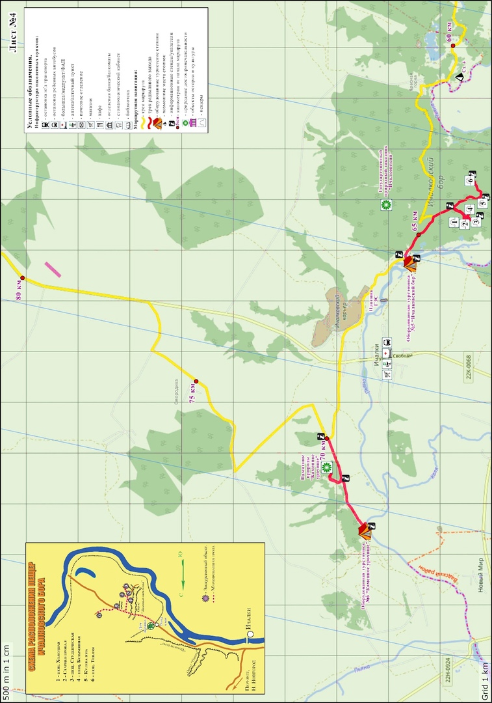
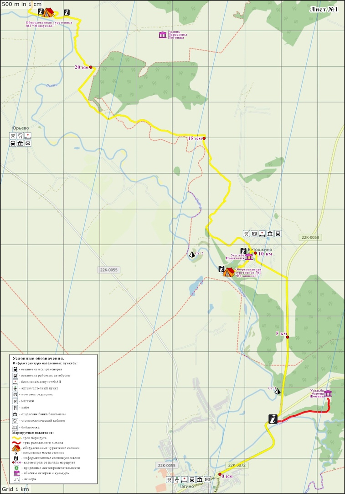

Существует огромное количество маршрутов по Нижегородской области.
Излюбленным местом туристов считается бассейн реки Пьяны. Обычно у рек есть левобережная и правобережная части,
которые расположены друг напротив друга.
У Пьяны правобережье находится внутри петли, которую делает река.
Эта территория называется Межпьянье.
Она находится между двумя участками одной и той же реки.
Район Межпьянья уникален для Нижегородской области по количеству и набору своих достопримечательностей.
Каждый турист, вне зависимости от предпочтений, найдет здесь интересный объект по душе.
Участок маршрута, включающий в себя спуск в пещеры не оставит равнодушным ни одного даже самого недоверчивого по отношению к туризму человека.
Можно начать путь в Ичалках, устроить ночлег в оборудованной турстоянке №5 и закончить путешествие в Красной горке,
либо вернуться в точку старта.


По этой же реке Пьяне можно пройти другой маршрут от Гагино до Ветошкино.
Во время путешествия будет возможность посетить усадьбу барона Жомини и усадьбу Пашковых.
Лагерь можно будет разбить в лесу между Гагино и Ветошкино.
В нашей области существуют организаций, подготавливающих и проводящих походы разного уровня сложности для разных возрастных групп.
Например, Нижегородский Областной Туристский Клуб
Перейдя на их сайт, Вы можете более подробно ознакомиться с вариантами
туристических походов.